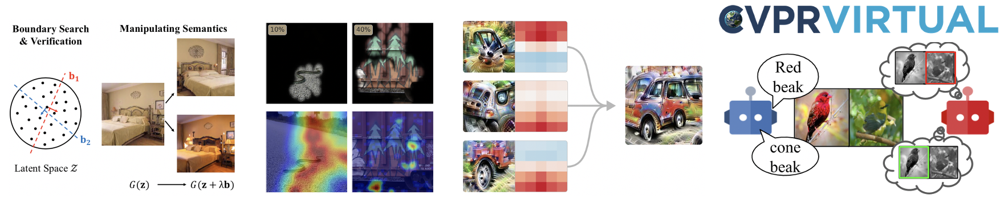

CVPR 2020 Tutorial onInterpretable Machine Learning for Computer Vision |
||
Anywhere on earth on June 15, 2020 |
||

Complex machine learning models such as deep convolutional neural networks and recursive neural networks have recently made great progress in a wide range of computer vision applications, such as object/scene recognition, image captioning, visual question answering. But they are often perceived as black-boxes. As the models are going deeper in search of better recognition accuracy, it becomes even harder to understand the predictions given by the models and why.
Continuing from our previous two Interpretable Machine Learning Tutorials held at ICCV'19 and CVPR’18 where more than 1000 audience attended, this 3rd Tutorial will go virtual due to the pandemic. We will review the recent progress we made on visualization, interpretation, and explanation methodologies for analyzing both the data and the models in computer vision. The main theme of the tutorial is to build up consensus on the emerging topic of the machine learning interpretability, by clarifying the motivation, the typical methodologies, the prospective trends, and the potential industrial applications of the resulting interpretability.
Lecture 1 by Bolei Zhou: Discovering and Utilizing the Latent Semantics in GANs. video slide
Lecture 2 by Ruth C. Fong: TBA title. video slide
Lecture 3 by Christopher Olah: TBA title. video slide
Lecture 4 by Zeynep Akata: TBA title. video slide
Please contact Bolei Zhou if you have question.